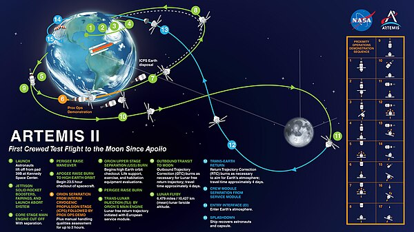

Overview
NASA's Artemis program allows humans to return to the Moon. The second launch is scheduled for November 2024, depending on weather conditions. This will also be the first mission with a flight crew performing a flyby of the Moon's orbit. The Artemis missions will include both human and robotic missions for Moon exploration. They will create a durable lunar presence and pave the way for human exploration on Mars. Artemis 2 will use the Orion spacecraft and the Space Launch System, where data will be collected on the spacecraft and the crew's performance. Collecting this data will show whether Artemis is ready to send people to the Moon's surface.
History
The first mission occurred in late 2022, with an uncrewed test flight, which orbited and flew past the Moon. Artemis was named after the Greek Goddess of the Moon and Apollo's twin sister. The Apollo program first landed humans on the Moon in 1969. The Orion spacecraft was named after Classical mythology, Orion, a hunting companion of Artemis.
Mission
The Artemis 2 mission plans to send four astronauts for a lunar flyby. The mission is set for a maximum of 21 days. The crew will perform various checkouts of the spacecraft's life support systems. The main objective is to go to the Moon and stay there by establishing a presence in the lunar orbit and the Moon's surface. By going on these missions, NASA will achieve equality by having the first women and person of color on the surface, new technology such as spacesuits, partnerships with SpaceX and Boeing, and knowledge.
Crew
For this mission, four astronauts will be sent. The mission will include the first person of color, women, and non-American to go beyond Earth's lower orbit.
- Commander Reid Wiseman
- Pilot Victor J. Glover
- Mission Specialist Christina Koch
- Mission Specialist Jeremy Hansen
Clockwise from left: Koch, Glover, Hansen, Wiseman.
Connections
While this mission is cool. Another exciting subject related to space is Saturn.